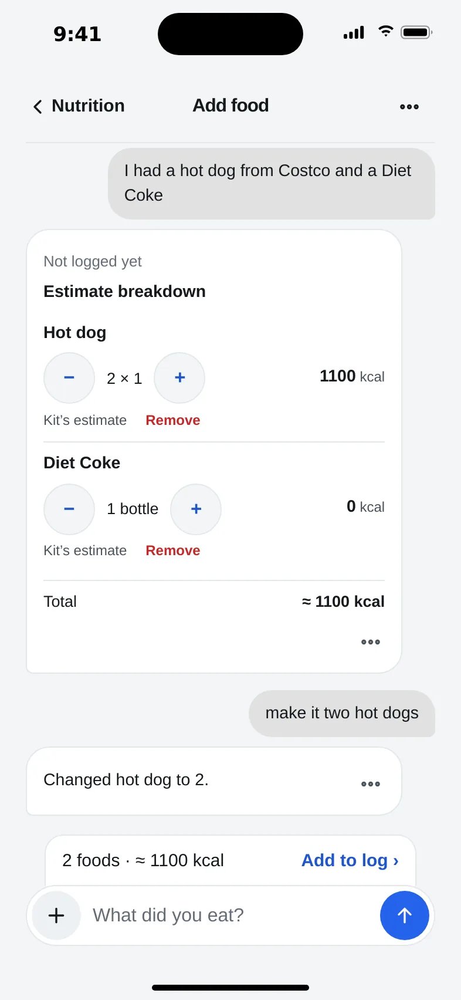
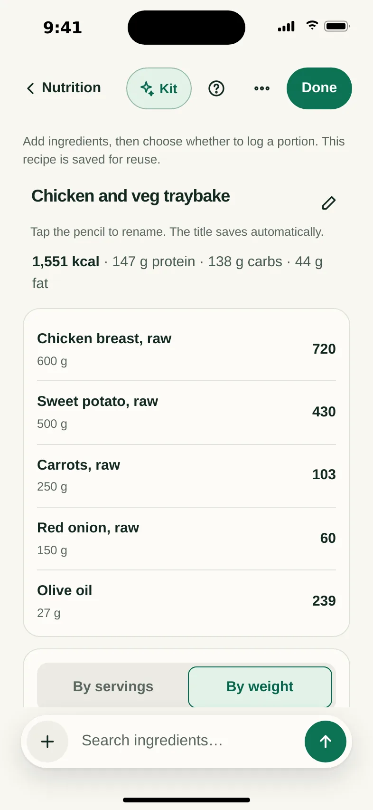
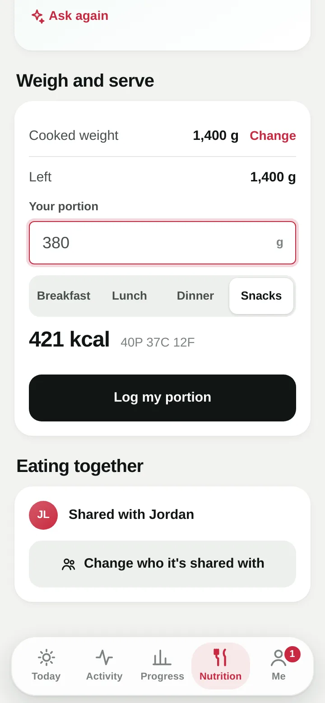
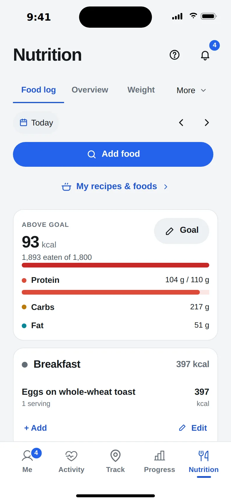
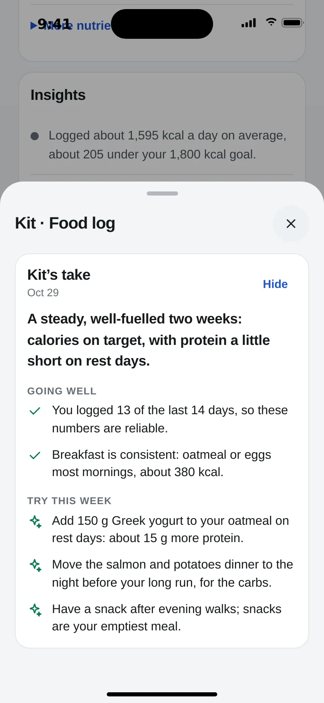
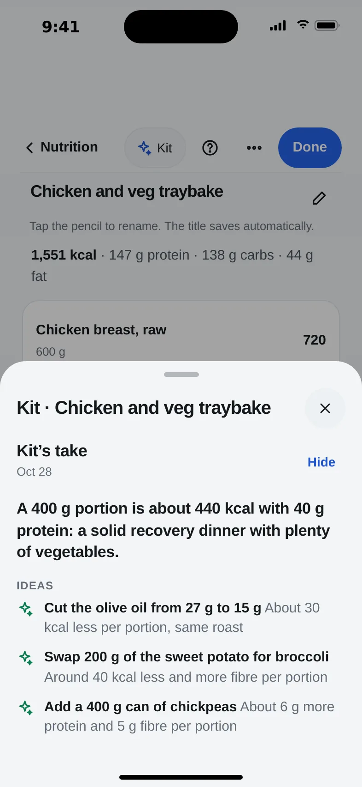

Just say what you ate. Kinetta does the counting.
Type it like a text message. Kinetta finds the foods you’ve had before and the brands you name, adds up the calories, protein, carbs and fat, and you fix anything in plain words.
a hot dog and a Diet Coke from Costco
2 foods, about 550 kcal. Check below, or tell me what to change.
make it two hot dogs
Now about 1,100 kcal. Ready to add to dinner.
Or snap a photo, scan a barcode or search. Example uses demo estimates.

Your food log, with or without AI.
Find foods in USDA and Open Food Facts, scan a packaged product or enter known calories and macros with Quick. Your usuals and My Recipes make repeat logging easier. Edit or remove a logged food from its meal, with Undo if you remove it by mistake.
See how it worksBuild a recipe once. Log your portion.
Choose Create a Recipe, add ingredients and save it in My Recipes. When you eat it again, log a serving or weigh your plate.
- Add ingredients: search foods, scan barcodes or describe them. Check suggested products and package amounts
- Read a label: optional photo reading helps enter package nutrition; check the result
- Choose your portion: use servings, or enter the cooked weight to log by grams
- Reuse a recipe: log it again or edit the ingredients for next time
- Share a recipe: approved friends can log their own portion


Your day at a glance.

Your day at a glance
See eaten and remaining calories, macro totals and your targets. Open the energy breakdown to see how daily needs and recorded workouts contribute. Track weigh-ins in Weight and review trends in Overview.

Optional food-log review
An optional AI review of your recent food log, with suggestions based on the days you recorded.

Optional recipe suggestions
Optional AI suggestions for changing a recipe’s ingredients or portions. Review the changes before using them.